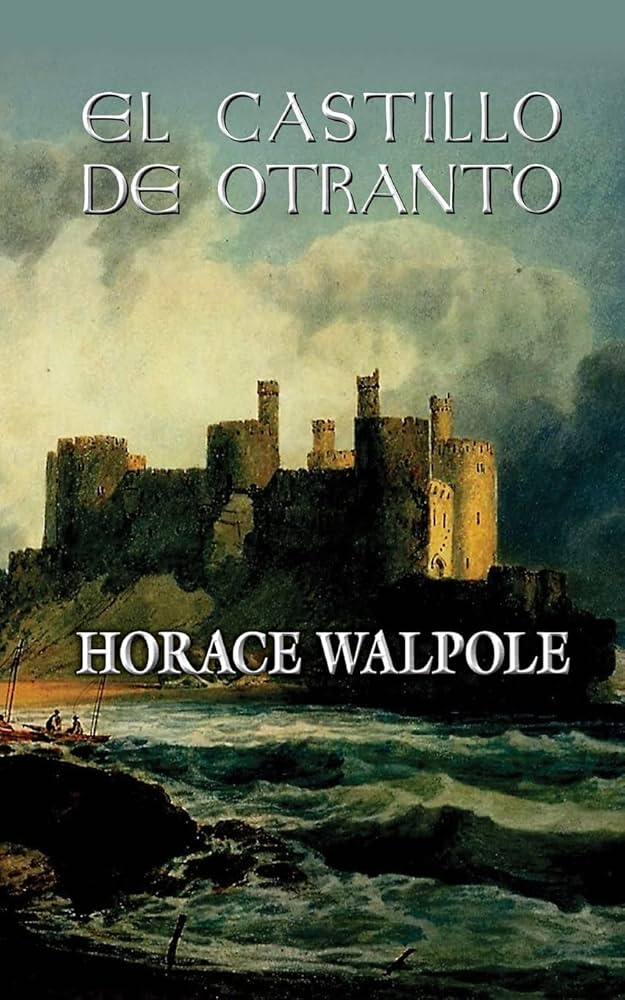
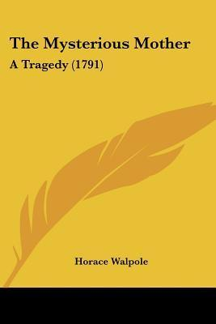

-

El castillo de Otranto- Horace Walpole (1764)Leer aqui!
Obra precursora del terror gótico, ambientada en la Alta Edad Media, El castillo de Otranto narra la historia de la maldición que recae sobre la familia de Manfred, el hombre que ha usurpado la fortaleza que da nombre a este libro.
-
 Hieroglyphic Tales (1785)Leer aqui!
Hieroglyphic Tales (1785)Leer aqui!
UEsta colección de cuentos cortos de Walpole también muestra su interés por lo sobrenatural y lo misterioso. Cada cuento presenta elementos fantásticos y enigmáticos que capturan la imaginación del lector, manteniendo el tono gótico que caracteriza su obra.
-

The Mysterious Mother (1768)Leer aqui!
Aunque no es estrictamente un cuento corto, esta obra teatral de Walpole es notable por su tratamiento de temas tabúes y su atmósfera sombría. La historia se centra en el incesto y el secreto, elementos que son comunes en la literatura gótica de la época.